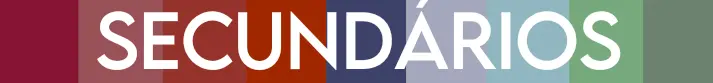
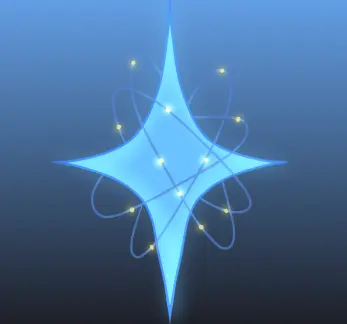
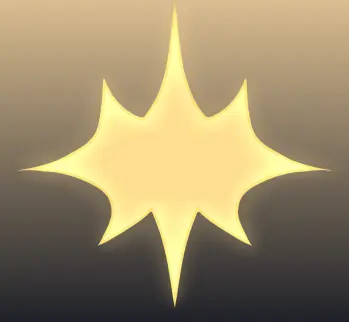
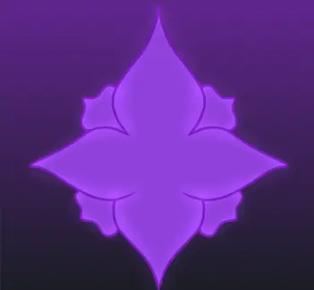
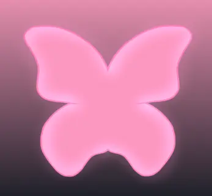
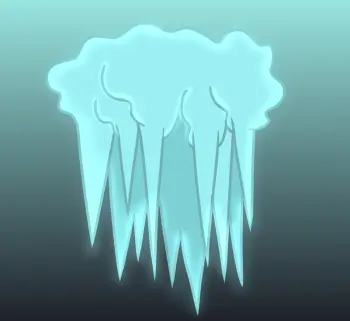
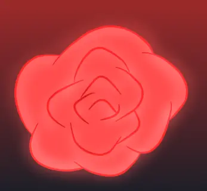
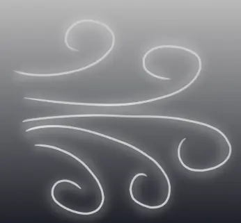
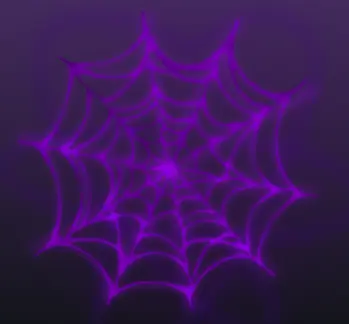

Os principais são a primeira leva de ocs da Ni,
Atualmente existem 16 ocs, entretanto,
3 fazem um papel importante na história de alguns personagens.

Os Secundários são ocs auxiliares nas histórias dos principais,
entre eles têm parentes, interações românticas, inimigos e até amigos dos principais
deixando a história deles mais viva. Atualmente existem 14 ocs secundárias
Nove almas com capacidade de pensar e sentir emoções criadas por uma estrela
que obteve consciência, cada alma representa algum elemento, com suas próprias armas e poderes.
Mesmo contendo um corpo humano, eles não são um, entretanto, em alguns a humanidade é bem presente,
seja da forma boa ou ruim.
Versões passadas de certos personagens, sejam os principais,
secundários, “os pecadores”. Mas talvez certos personagens tiveram uma mudança
tão brusca que atualmente estão irreconhecíveis,
como tivessem morrido e renascidos novamente.
Next
GALERIA
Alma da Criação

Guardião 1
Guardiões
Alma da luz

Guardião 2
Guardiões
9 Almas criadas por uma estrela, cada um com poder próprio.
Alma do Veneno

Guardião 3
Guardiões
9 Almas criadas por uma estrela, cada um com poder próprio.
Alma da Borboleta

Guardião 4
Guardiões
9 Almas criadas por uma estrela, cada um com poder próprio.
Alma do Gelo

Guardião 5
Guardiões
9 Almas criadas por uma estrela, cada um com poder próprio.
Guardião 6

Alma da Rosa
Guardiões
9 Almas criadas por uma estrela, cada um com poder próprio.
Guardião 7
Alma do Som
Guardiões
9 Almas criadas por uma estrela, cada um com poder próprio.
Guardião 8
Alma da Folha
Guardiões
9 Almas criadas por uma estrela, cada um com poder próprio.
Guardião 9

Alma do Vento
Guardiões
9 Almas criadas por uma estrela, cada um com poder próprio.
Guardião 10

Alma da Ligação
Guardiões
9 Almas criadas por uma estrela, cada um com poder próprio.